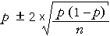

| error = p − π ~ normal (0, | ) |
95% bounds on the estimation error
When sample proportion p is used to estimate a corresponding population proportion, π, the resulting error has the approximate distribution,
| error = p − π ~ normal (0, | ) |
Replacing π by our best estimate, p , and using the properties of the normal distribution, we can therefore write
| Prob( error is between ± 2 | ) ≈ 0.95 |
The value 1.96 could be used instead of 2 in this equation since exactly 95% of values from a normal distribution are within 1.96 standard deviations of the mean. However this refinement does not help because:
Survival of fruit flies on heat-treated mangoes
An earlier example described survival of fruit fly eggs on mangoes that had been heat-treated at 43 degrees Celsius.
| Surviving adults | 637 |
|---|---|
| Eggs killed | 5,266 |
| Total eggs | 5,903 |
The proportion surviving was p = 637/5903 = 0.1079 and this provides a point estimate of the probability, π, that fruit fly eggs in general will survive this heat treatment.
The diagram below shows our estimated normal distribution for the errors and approximate 95% bounds on the error.

95% confidence interval
Since there is a probability of approximately 0.95 that p is within
| 2 × |
of π, a 95% confidence interval for π is...

Survival of fruit flies on mangoes
A 95% confidence interval for the probability of the heat treatment killing a fruit fly egg is therefore
0.1079 ± 0.0080
i.e. 0.0999 to 0.1159
We are therefore 95% confident that the treatment kills between 10.0% and 11.6% of eggs.